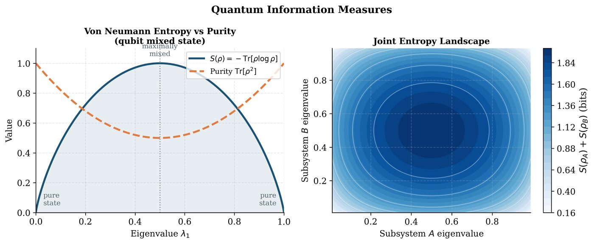
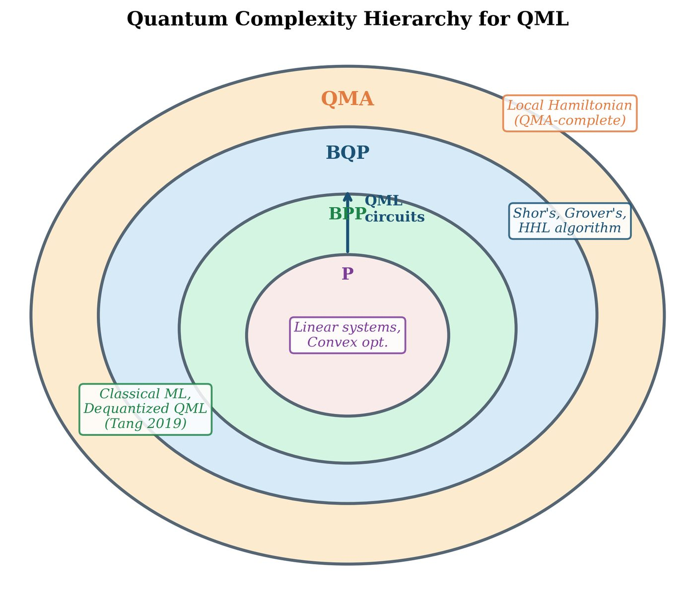

Chapter 3: Quantum Information Theory for Machine Learning¶
Quantum information theory provides the mathematical language for quantifying information, uncertainty, and distinguishability in quantum systems. For QML, these tools play three roles: they bound what quantum computers can learn, they provide loss functions for quantum generative models, and they reveal geometric structure on the space of quantum circuits that informs better optimization. This chapter develops the key concepts with machine learning applications in view.
Learning Objectives
By the end of this chapter, you will be able to:
-
Compute von Neumann entropy and quantum relative entropy
-
Apply the Holevo bound to quantum communication and learning
-
Distinguish and compute trace distance and quantum fidelity
-
Use the quantum Fisher information matrix in optimization
-
Navigate the quantum complexity hierarchy (BQP, QMA) and its ML implications
-
Understand dequantization results and their implications
3.1 Quantum Entropy and Information¶
3.1.1 Von Neumann Entropy¶
Definition: Von Neumann Entropy
For a density matrix \(\rho\), the von Neumann entropy is:
where \(\{\lambda_i\}\) are the eigenvalues of \(\rho\) and \(0 \log 0 := 0\).

Key properties:
-
\(S(\rho) = 0\) iff \(\rho\) is a pure state (\(\text{Tr}[\rho^2] = 1\))
-
\(S(\rho) \leq \log d\) (maximized by the maximally mixed state \(I/d\))
-
Subadditivity: \(S(\rho_{AB}) \leq S(\rho_A) + S(\rho_B)\)
-
Strong subadditivity: \(S(\rho_{ABC}) + S(\rho_B) \leq S(\rho_{AB}) + S(\rho_{BC})\)
-
Invariance under unitaries: \(S(U\rho U^\dagger) = S(\rho)\)
Solved Example 3.1
Problem: Compute \(S(\rho)\) for (a) \(\rho = |\Phi^+\rangle\langle\Phi^+|\) and (b) \(\rho = \frac{3}{4}|0\rangle\langle0| + \frac{1}{4}|1\rangle\langle1|\).
Solution: (a) \(|\Phi^+\rangle\langle\Phi^+|\) is pure, so \(S = 0\).
(b) Eigenvalues: \(\lambda_1=3/4\), \(\lambda_2=1/4\). \(S = -\frac{3}{4}\log_2\frac{3}{4} - \frac{1}{4}\log_2\frac{1}{4} = \frac{3}{4}(\log_2 4 - \log_2 3) + \frac{1}{4}\cdot 2 = \frac{3}{4}(2-1.585) + 0.5 = 0.311 + 0.5 = 0.811\) bits.
3.1.2 Quantum Relative Entropy¶
(Klein’s inequality: \(S(\rho\|\sigma) = 0\) iff \(\rho = \sigma\).)
Quantum mutual information:
3.1.3 Holevo Bound¶
The Holevo bound limits how much classical information can be extracted from a quantum system:
where \(X\) is the encoded classical variable, \(Y\) is the measurement outcome, and \(\chi\) is the Holevo information.
Important
ML implication: The Holevo bound limits the learning capacity of a quantum channel. An \(n\)-qubit system can communicate at most \(n\) classical bits reliably, even though its state space is \(2^n\)-dimensional. This explains why quantum speedups in ML cannot come purely from dimensionality.
3.2 Fidelity and Distance Measures¶
3.2.1 Trace Distance¶
where \(|A| = \sqrt{A^\dagger A}\). \(D(\rho,\sigma) \in [0,1]\).
Operational meaning: Maximum bias in distinguishing \(\rho\) from \(\sigma\) by any measurement: \(D(\rho,\sigma) = \max_{0\leq M\leq I} |\text{Tr}[M(\rho-\sigma)]|\).
3.2.2 Quantum Fidelity¶
For pure states \(\rho = |\psi\rangle\langle\psi|\), \(\sigma = |\phi\rangle\langle\phi|\): \(F(\rho,\sigma) = |\langle\psi|\phi\rangle|^2\).
Uhlmann’s theorem: \(F(\rho,\sigma) = \max_{|\Psi\rangle, |\Phi\rangle} |\langle\Phi|\Psi\rangle|^2\) maximized over purifications of \(\rho\) and \(\sigma\).
Bures distance: \(d_B(\rho,\sigma) = \sqrt{2(1-\sqrt{F(\rho,\sigma)})}\).
Relations (Fuchs-van de Graaf inequalities):
Solved Example 3.2
Problem: Compute the fidelity and trace distance between \(\rho = \begin{pmatrix}0.9&0\\0&0.1\end{pmatrix}\) and \(\sigma = \begin{pmatrix}0.7&0\\0&0.3\end{pmatrix}\).
Solution: Both are diagonal, so: \(F(\rho,\sigma) = \left(\sqrt{0.9\cdot0.7} + \sqrt{0.1\cdot0.3}\right)^2 = (\sqrt{0.63}+\sqrt{0.03})^2 = (0.794+0.173)^2 = 0.935\). \(D(\rho,\sigma) = \frac{1}{2}(|0.9-0.7|+|0.1-0.3|) = \frac{1}{2}(0.2+0.2) = 0.2\). Check Fuchs-van de Graaf: \(1-\sqrt{0.935} = 0.033 \leq 0.2 \leq \sqrt{1-0.935} = 0.255\). ✓
3.3 Quantum Fisher Information and Geometry¶
3.3.1 Classical Fisher Information¶
For a parameterized probability distribution \(p(x|\theta)\):
Cramér-Rao bound: \(\text{Var}[\hat{\theta}] \geq 1/F(\theta)\).
3.3.2 Quantum Fisher Information Matrix¶
For a parameterized state \(\rho(\boldsymbol{\theta})\), the Quantum Fisher Information Matrix (QFIM) is:
where \(L_j\) is the symmetric logarithmic derivative defined by \(\partial_{\theta_j}\rho = \frac{1}{2}(\rho L_j + L_j \rho)\).
For a pure state \(|\psi(\boldsymbol{\theta})\rangle\):
3.3.3 Fubini-Study Metric and Quantum Natural Gradient¶
The QFIM defines the Fubini-Study metric on the space of quantum circuits. The Quantum Natural Gradient (QNG) update:
This steepest descent with respect to the Fubini-Study distance (rather than Euclidean) often converges much faster — see Chapter 15.
Solved Example 3.3
Problem: Compute the QFI for \(|\psi(\theta)\rangle = \cos(\theta/2)|0\rangle + \sin(\theta/2)|1\rangle\).
Solution: \(\partial_\theta|\psi\rangle = -\frac{1}{2}\sin(\theta/2)|0\rangle + \frac{1}{2}\cos(\theta/2)|1\rangle\)
\(\langle\partial_\theta\psi|\partial_\theta\psi\rangle = \frac{1}{4}\sin^2(\theta/2) + \frac{1}{4}\cos^2(\theta/2) = \frac{1}{4}\)
\(\langle\partial_\theta\psi|\psi\rangle = -\frac{1}{2}\sin(\theta/2)\cos(\theta/2) + \frac{1}{2}\cos(\theta/2)\sin(\theta/2) = 0\)
\(F_Q(\theta) = 4\left(\frac{1}{4} - 0\right) = 1\)
The QFI equals 1, giving Cramér-Rao bound \(\text{Var}[\hat{\theta}] \geq 1\).
3.4 Quantum Complexity Theory¶
3.4.1 The Quantum Complexity Hierarchy¶
Key complexity classes relevant to QML:
-
P: Problems solvable by a deterministic Turing machine in polynomial time
-
BPP: Bounded-error Probabilistic Polynomial time (classical randomized)
-
BQP: Bounded-error Quantum Polynomial time (quantum circuits)
-
QMA: Quantum Merlin-Arthur (quantum verifiable proofs)
-
PSPACE: Polynomial space (classical)
Known relations: \(\text{P} \subseteq \text{BPP} \subseteq \text{BQP} \subseteq \text{PSPACE}\) and \(\text{BPP} \subseteq \text{QMA} \subseteq \text{PSPACE}\). The containment \(\text{BPP} \subsetneq \text{BQP}\) (strict) is widely believed but not proven.

3.4.2 Quantum Advantage for Machine Learning¶
Definition: Quantum Advantage
A quantum algorithm achieves quantum advantage if it solves a learning problem with asymptotically fewer resources (time, queries, samples) than any classical algorithm.
Types of advantage in ML:
-
Sample complexity advantage: Learn with fewer training examples
-
Computational advantage: Process fixed data faster
-
Representational advantage: Express richer function classes
-
Statistical advantage: Better generalization bounds
Research Highlight: Dequantization: The Tang Revolution (2019)
In 2018, IBM claimed an exponential speedup for quantum recommendation systems via HHL. In 2019, Ewin Tang (then an undergraduate) showed that a classical algorithm can achieve the same performance in nearly the same asymptotic time, using \(\ell^2\)-norm sampling — a classical technique that mimics quantum amplitude estimation.
This “dequantization” has since been applied to quantum PCA, quantum SVM, and other algorithms, raising the question: which quantum ML speedups are real?
The honest answer (2025): We know of provable quantum advantages for learning quantum states and quantum processes. For classical data, the picture is murkier. See Chapter 23 for a detailed analysis.
3.5 Quantum Channels for Learning¶
3.5.1 Diamond Norm and Channel Distinguishability¶
The diamond norm measures the distinguishability of two quantum channels:
This is the operational distance for discriminating two channels with ancillary systems.
ML implication: The diamond norm bounds the sample complexity for learning a quantum channel (process tomography). If two channels have \(\|\mathcal{E}-\mathcal{F}\|_\diamond \leq \epsilon\), no experiment can distinguish them using fewer than \(O(1/\epsilon^2)\) samples.
3.5.2 Quantum Data Compression¶
Schumacher compression: A source emitting states \(\rho^{\otimes n}\) can be compressed to \(nS(\rho)\) qubits with asymptotically perfect fidelity. This is the quantum analogue of Shannon’s source coding theorem.
import numpy as np
from scipy.linalg import logm, sqrtm
def von_neumann_entropy(rho):
"""Von Neumann entropy in nats."""
eigvals = np.linalg.eigvalsh(rho)
eigvals = eigvals[eigvals > 1e-12] # remove near-zero eigenvalues
return -np.sum(eigvals * np.log(eigvals))
def quantum_fidelity(rho, sigma):
"""Fidelity F(rho, sigma) = (Tr sqrt(sqrt(rho) sigma sqrt(rho)))^2."""
sqrt_rho = sqrtm(rho)
inner = sqrtm(sqrt_rho @ sigma @ sqrt_rho)
fidelity = np.real(np.trace(inner))**2
return np.clip(fidelity, 0, 1)
def trace_distance(rho, sigma):
"""Trace distance D(rho, sigma) = 0.5 * ||rho - sigma||_1."""
diff = rho - sigma
eigvals = np.linalg.eigvalsh(diff)
return 0.5 * np.sum(np.abs(eigvals))
def quantum_relative_entropy(rho, sigma):
"""S(rho || sigma) = Tr[rho (log rho - log sigma)]."""
return np.real(np.trace(rho @ (logm(rho) - logm(sigma))))
# Example: two qubit states
rho = np.array([[0.9, 0], [0, 0.1]])
sigma = np.array([[0.7, 0], [0, 0.3]])
print(f"S(rho) = {von_neumann_entropy(rho):.4f} nats")
print(f"F(rho,sigma) = {quantum_fidelity(rho, sigma):.4f}")
print(f"D(rho,sigma) = {trace_distance(rho, sigma):.4f}")
print(f"S(rho||sigma) = {quantum_relative_entropy(rho, sigma):.4f}")
3.6 Chapter Summary¶
Chapter Summary
-
Von Neumann entropy \(S(\rho) = -\text{Tr}[\rho\log\rho]\) generalizes Shannon entropy. It equals 0 for pure states and \(\log d\) for maximally mixed states.
-
Holevo bound limits classical information extractable from quantum states to \(S(\bar{\rho}) - \sum p_x S(\rho_x)\) bits. Key constraint on QML learning capacity.
-
Trace distance \(D = \tfrac{1}{2}\|\rho-\sigma\|_1\) and fidelity \(F(\rho,\sigma)\) are the primary quantum state distance measures. They bound each other via Fuchs-van de Graaf.
-
Quantum Fisher Information defines the geometry of parameter space. Its inverse gives Cramér-Rao bound; it is the metric for Quantum Natural Gradient.
-
BQP \(\subseteq\) PSPACE: Quantum computers cannot solve NP-hard problems in general. The quantum advantage for ML is real for quantum data but contested for classical data.
-
Dequantization: Many claimed quantum speedups for classical ML tasks can be reproduced classically using \(\ell^2\)-norm sampling.
Exercises
Exercise . Show that for a maximally mixed qubit \(\rho = I/2\), \(S(\rho) = \log 2 = 1\) bit.
Exercise . Prove that \(S(\rho_{AB}) \geq |S(\rho_A) - S(\rho_B)|\) (Araki-Lieb inequality) for any bipartite state \(\rho_{AB}\). Hint: Use the purification argument.
Exercise . Compute the Holevo information \(\chi\) for the ensemble \(\{(1/2, |0\rangle), (1/2, |+\rangle)\}\).
Exercise . Prove that for pure states, the fidelity reduces to \(F(|\psi\rangle,|\phi\rangle) = |\langle\psi|\phi\rangle|^2\).
Exercise . The quantum relative entropy \(S(\rho\|\sigma) = 0\) iff \(\rho = \sigma\) (Klein’s inequality). Prove this for the case where \(\rho\) and \(\sigma\) commute (diagonal matrices).
Exercise . Read Tang (2019) (Tang 2019) on dequantization of quantum recommendation systems. Identify which property of the classical algorithm mimics quantum amplitude estimation. Explain in 1–2 paragraphs.
Further Reading
-
Wilde, Quantum Information Theory (Wilde 2013) — comprehensive treatment
-
Watrous, The Theory of Quantum Information (online) — rigorous reference
-
Tang (2019), A quantum-inspired classical algorithm for recommendation systems (Tang 2019)
-
Cerezo et al. (Cerezo et al. 2021) — quantum Fisher information for VQAs